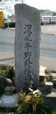
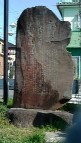

愛知県の岩倉市といえば日本の桜百選にも選ばれた五条川で有名。先般 その五条川の近くを通りかかったとき、道ばたに小さな石碑をみつけた。なんだろうと車から降りてみた。すると その石碑には「濃尾平野 発祥の地」と刻まれていた。

岩倉市はちょうど名古屋市（愛知県）と岐阜市（岐阜県）の真ん中くらい。いうならこの場所は濃尾平野のド真ん中。どうして ここが「濃尾平野 発祥の地」なのか不思議に思った。
しかし よく考えてみると、昔から このあたりは河川の氾濫で有名な地帯。現在の濃尾平野のすぐ西側には、薩摩義士の改修工事で有名な木曽三川（木曽川、長良川、揖斐川）もある。要するに昔はこのあたりも平野というより大湿地帯だったらしい。
実際、この石碑のすぐ近くに、明治時代に行われた五条川大改修工事の記念碑も建てられていた。

この記念碑には、愛知県庁の高木哲之助という土木技師長が職務を超えて取り組み、ついに完遂させた大事業だったと記されていた。いやあ、昔の人は役人はエラカッタ...現在の濃尾平野は、そういう昔の人たちの努力で今日の安定した広さになったと思われ。いたく感心したので、携帯でパチリ。さっそく紹介することにした。
|